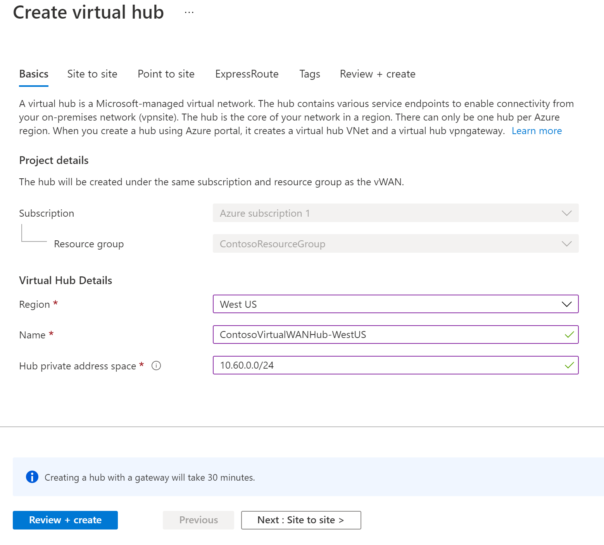

M02-Unit 7 Create a Virtual WAN by using Azure Portal
In this exercise, you will create a Virtual WAN for Contoso.
In this exercise, you will:
- Task 1: Create a Virtual WAN
- Task 2: Create a hub by using Azure Portal
- Task 3: Connect a VNet to the Virtual Hub
- Task 4: Clean up resources
Task 1: Create a Virtual WAN
-
From a browser, navigate to the Azure portal and sign in with your Azure account.
-
In the portal, type Virtual WAN into the search box and select Virtual WANs from the results list.

-
On the Virtual WAN page, select + Create.
-
On the Create WAN page, on the Basics tab, fill in the following fields:
-
Subscription: Use the existing subscription
-
Resource group: ContosoResourceGroup
-
Resource group location: Choose a resource location from the dropdown. A WAN is a global resource and does not live in a particular region. However, you must select a region to manage and locate the WAN resource that you create.
-
Name: ContosoVirtualWAN
-
Type: Standard
-
-
When you have finished filling out the fields, select Review +Create.
-
Once validation passes, select Create to create the Virtual WAN.
Task 2: Create a hub by using Azure Portal
A hub contains gateways for site-to-site, ExpressRoute, or point-to-site functionality. It takes 30 minutes to create the site-to-site VPN gateway in the virtual hub. You must create a Virtual WAN before you can create a hub.
- Locate the Virtual WAN that you created.
- On the Virtual WAN page, under Connectivity, select Hubs.
- On the Hubs page, select +New Hub to open the Create virtual hub page. 
- On the Create virtual hub page Basics tab, complete the following fields:
- Region: West US
- Name: ContosoVirtualWANHub-WestUS
- Hub private address space: 10.60.0.0/24
- Select Next: Site-to-site.
- On the Site-to-site tab, complete the following fields:
- Do you want to create a Site to site (VPN gateway)?: Yes
- The AS Number field cannot be edited.
- Gateway scale units: 1 scale unit = 500 Mbps
- Select Review + Create to validate.
- Select Create to create the hub.
- After 30 minutes, Refresh to view the hub on the Hubs page.
Task 3: Connect a VNet to the Virtual Hub
-
Locate the Virtual WAN that you created.
-
In ContosoVirtualWAN, under Connectivity, select Virtual network connections.
-
On ContosoVirtualWAN Virtual network connections, select + Add connection. -
In Add connection, use the following information to create the connection.
-
Connection name: ContosoVirtualWAN-to-ResearchVNet
-
Hubs: ContosoVirtualWANHub-WestUS
-
Subscription: no changes
-
Resource Group: ContosoResourceGroup
-
Virtual network: ResearchVNet
-
Propagate to none: Yes
-
Associate Route Table: Default
-
- Select Create.
Congratulations! You have created a Virtual WAN and a Virtual WAN Hub and connected the ResearchVNet to the hub.
Task 4: Clean up resources
Note: Remember to remove any newly created Azure resources that you no longer use. Removing unused resources ensures you will not see unexpected charges.
-
In the Azure portal, open the PowerShell session within the Cloud Shell pane.
-
Delete all resource groups you created throughout the labs of this module by running the following command:
codeRemove-AzResourceGroup -Name 'ContosoResourceGroup' -Force -AsJobNote: The command executes asynchronously (as determined by the -AsJob parameter), so while you will be able to run another PowerShell command immediately afterwards within the same PowerShell session, it will take a few minutes before the resource groups are actually removed.